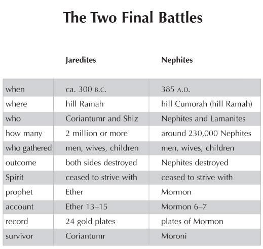

Moroni, the only known Nephite survivor of the battle at Cumorah, was the narrator of the account in the book of Ether that involves the final Jaredite battle at Ramah. He must have been deeply impressed by the parallels between the two wars of annihilation. In both cases, nations of great promise were wiped away. Because of their wickedness, the Spirit of God “ceased to strive” with both peoples (Mormon 5:16; Ether 15:19). In this chart the dates, places, numbers of soldiers, outcomes, and other statistics of these battles are contrasted. Despite the consequent collapse of these civilizations, a remnant of Lehi's seed was preserved, fulfilling the promises made by the Lord to Lehi, Nephi, Enos, and other righteous Nephites.

This chart compares the final battles of both the Jaredite and Nephite civilizations, which took place near the same hill (see Ether 15:11).
Figure 1 John W. Welch and Greg Welch, "The Two Final Battles," in Charting the Book of Mormon, chart 138.
The decapitation of Shiz, right at the very end of the last chapter of the Book of Ether, is often noted and wondered about. Shiz had his head chopped off, and then he raised up and collapsed. People suppose that it must be mythological. They think it must have been embellished through the ages and doesn’t represent an accurate account of what had happened. Enlightening readers about the plausibility of this reported physiological phenomenon, Gary Hatfield, a professor of neuropathology, explains, Shiz’s death struggle illustrates the classic reflex posture that occurs in both humans and animals when the upper brain stem (midbrain/mesencephalon) is disconnected from the brain. The extensor muscles of the arms and legs contract, and this reflect action could cause Shiz to raise up on his hands. In many patients, it is the sparing of vital respiratory and blood pressure in the central (pons) and lower (medulla) brain stem that permits survival.
The brain stem is located inside the base of the skull and is relatively small. It connects the brain proper, or cerebrum, with the spinal cord in the neck.
Coriantumr was obviously too exhausted to do a clean job. His stroke evidently strayed a little too high. He must have cut off Shiz’s head through the base of the skull, at the level of the midbrain, instead of lower through the cervical spine in the curvature of the neck. … Significantly, this nervous system phenomenon (decerebrate rigidity) was first reported in 1898, long after the Book of Mormon was published.
Apparently, when the brain stem is cut at a certain point there is still enough of the brain left that it can give these impulses before the victim dies. Modern scientific knowledge thus offers corroboration of this gruesome account in the Book of Mormon.
The last person left in the Book of Ether is Coriantumr. This relates to Omni 1:21, which speaks of the people of Zarahemla finding a man named Coriantumr: And they [a large stone with engravings] gave an account of one Coriantumr, and the slain of his people. And Coriantumr was discovered by the people of Zarahemla; and he dwelt with them for the space of nine moons.
Coriantumr apparently did not die after he cut off Shiz’s head. It only says he collapsed “as if he had no life.” He was exhausted but alive, and it seems that this same Coriantumr is the one who is mentioned as having been found in the book of Omni. He knew his king list; he knew his genealogy. It is possible that certain Nephite names (such as Nehor in Ether 7:4), were first Jaredite names and were passed down by Coriantumr.
When most everyone had died, the Lord finally said to Ether, “go forth.” He had been watching and he knew that it was safe for him to come out of the cave. Thinking about both Ether and Mormon, how do you end a book like this? How do you make a conclusion about what you have witnessed? What other options might they have had? There was no point in calling people to repentance; there was no one to call, nor to listen.
In the face of this catastrophe and tragedy, Ether acknowledged that “it mattereth not, if it so be that I am saved in the kingdom of God.” No matter what happens in your life, or what kinds of difficulties you face, salvation is most important. This was spoken by someone who had really seen trials and devastation, and I think that is really something.
When Ether wrote his book, he was not sure what was going to happen. The brother of Jared had been given promises that these teachings would come forth, but Ether did not even know what was going to happen to him next. He poured out his soul in an existential cry hoping that someone, someday, would care. He was doing what many people would do, and that was bearing solid testimony. His confidence and faith were extremely powerful, and his mind and will were submissive to the will of the Lord. Whatever would happen next, he said, “it mattereth not, if it so be that I am saved in the kingdom of God.
Amen” (15:34).